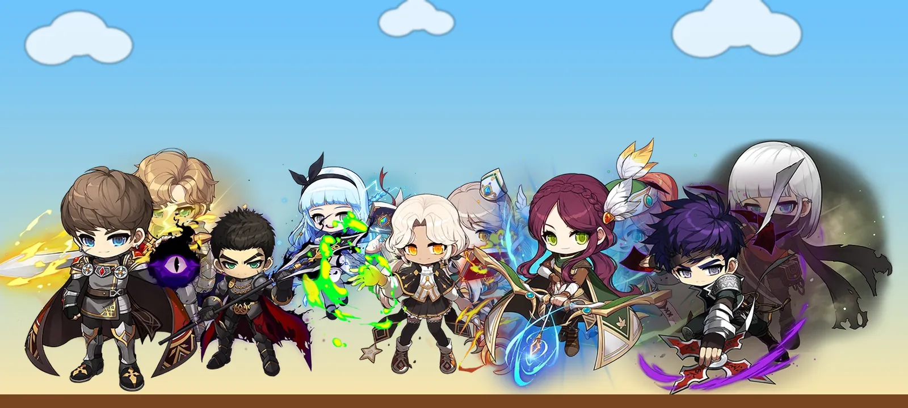
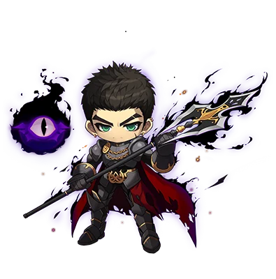
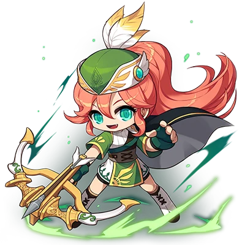

10 อาชีพใน Classic World เก่งตรงไหน ติดตรงไหน ใครควรเล่น
ก่อนกดสร้างตัวละคร ลองถามตัวเองสามข้อกับทุกอาชีพ: จุดแข็งที่สุดคืออะไร ข้อเสียใหญ่ที่สุดที่ต้องทนคืออะไร และอาชีพนี้เหมาะกับคนแบบไหน

ตาราง DPS เป็นสิ่งแรกที่หลายคนเปิดดูตอนเลือกอาชีพ แต่ใน Classic World มีอีกหลายเรื่องที่สำคัญพอ ๆ กัน ทั้งค่าเลี้ยงตัวละคร ค่ายา ความหายากของอาชีพ และนิสัยการเล่นของคุณเอง บทความนี้ไล่ดูทีละอาชีพ ว่าเก่งตรงไหน ติดตรงไหน และเหมาะกับใคร จะได้เลือกตัวที่เล่นแล้วสนุกไปได้ยาว ๆ
ก่อนเริ่ม: 3 เรื่องที่ทำให้ Classic World ไม่เหมือนที่คุ้นเคย
1. มอนในแมพค่อนข้างบาง สกิลตีเป้าเดี่ยวเลยสำคัญที่สุด
แมพส่วนใหญ่ตอนนี้มีมอนไม่หนาแน่น เกือบทุกอาชีพจึงใช้สกิลตีเป้าเดี่ยวเป็นหลักแทนสกิลกวาด อาชีพที่ดาเมจเป้าเดี่ยวสูงจึงได้เปรียบตอนเก็บเลเวลจริง
ดาเมจเป้าเดี่ยวต่อวินาที (DPS)
ตัวละคร Lv.70 ขั้นสอง ของระดับที่หาได้จริง ตีหุ่นนิ่งต่อเนื่อง 1 นาที
ที่มา: NiaMeowDB, ตารางเทียบ DPS ขั้นสอง ต.ค. 2026 (บิลด์จำลอง Lv.70) · ไม่นับการตีพลาด ค่ายา หรือเวลาเดินหามอน
แต่ถ้าวันหนึ่งมีแมพที่มอนแน่นขึ้น อันดับจะสลับกันทันที เพราะสกิลกวาดของนักรบและ Hunter แรงกว่าสกิลเป้าเดี่ยวหลายเท่า
ถ้ามอนอยู่รวมกัน 6 ตัว: DPS สกิลกวาด
บิลด์เดียวกับกราฟบน นับดาเมจรวมทุกเป้า
ที่มา: NiaMeowDB ชุดเดียวกัน · Assassin และ Cleric ไม่มีสกิลกวาดในขั้นสองจึงไม่อยู่ในกราฟ · Bandit นับจาก Steal ที่โดน 2 เป้า
2. ตาราง DPS ไม่ได้บอกว่าคุณจะมีของดีได้เร็วแค่ไหน
ตัวเลขด้านบนคิดจากของระดับเดียวกันทุกอาชีพ แต่ในเกมจริง ราคาสกรอลแต่ละสายต่างกันมาก นักรบที่ใช้อาวุธมือเดียวหรือกระบองซื้อสกรอล 60% ได้ถูก จึงเห็นนักรบที่ตีบวกอาวุธได้ +7 ครบทุกช่องบ่อยกว่า ส่วนสายที่คนเล่นเยอะอย่างโจรกับเมจ สกรอลแพงจนต้องเก็บเงินนาน
ค่าเลี้ยงตัวละครโดยประมาณ
แนวโน้มราคาสกรอลอาวุธและของจำเป็นของแต่ละสาย ไม่ใช่ราคาตลาดวันนี้
สายธนูยังไม่เห็นแนวโน้มชัด ลองเช็กราคาใน ตลาดซื้อขาย ก่อนวางแผนตีบวก
3. meso หายาก อะไรที่ช่วยประหยัดยาคือกำไร
ทุกคนในเซิร์ฟกำลังขาด meso สกิลที่ช่วยลดการกินยา เช่น Heal ของ Cleric หรือ Final Attack ที่ฟื้นเลือดของ Spearman จึงมีค่ามากกว่าที่ตัวเลขดาเมจบอก ส่วนอาชีพที่ต้องเดินเข้าไปตีมอนทุกตัวก็จะกินยามากกว่าสายยิงไกล

Assassin
โจรปาดาว คล่องที่สุดในเกม
👍 จุดเด่น
สไตล์การเล่นที่ไม่มีใครเหมือน เป็นอาชีพเดียวที่กระโดดแล้วโจมตีกลางอากาศได้ตลอด มี Haste ให้วิ่งเร็วและกระโดดสูงขึ้น เล่นแล้วได้ฟีลไหลไปตามแมพ กวาดมอนทีละจุดอย่างต่อเนื่อง แถม DPS เป้าเดี่ยวยังอยู่อันดับ 2 ทั้งที่เป็นสายยิงไกล
👎 ข้อเสียใหญ่
เลี้ยงแพงที่สุดในเกม สกรอลกรงเล็บราคาสูงกว่าสกรอลอาวุธนักรบหลายเท่า และยังมีค่าดาวที่อาชีพอื่นไม่ต้องจ่าย ตอนนี้ดาวดี ๆ ราคาแรงมาก ถ้าชอบตีบวกของหรือฝันถึงอาวุธใกล้ endgame อาชีพนี้คือทางที่หนักกระเป๋าที่สุด
🎯 เหมาะกับใคร
คนที่อยากได้การเล่นที่สนุกและคล่องตัวสุด ๆ และพร้อมจะเติมเงิน หรือยอมใช้เวลาฟาร์ม meso นาน ๆ แบบไม่เติม เพื่อแลกกับอัปเกรดของที่ตื่นเต้น

Bandit
โจรมีด ดาเมจเป้าเดี่ยวอันดับ 1
👍 จุดเด่น
ดาเมจแรงที่สุด Savage Blow พา Bandit ขึ้นอันดับ 1 ของ DPS เป้าเดี่ยว และเพราะแมพส่วนใหญ่มอนบาง ทุกอาชีพเลยใช้สกิลเป้าเดี่ยวกันหมด Bandit จึงได้เปรียบชัด
อีกข้อที่ไม่มีอาชีพอื่นทำได้คือเล่นได้สองแบบในตัวเดียว เริ่มจากปาดาวแบบ Assassin (เรียกกันว่า Sindit) ไปก่อน แล้วรีเซ็ต SP มาใช้มีดตอนสกิลพร้อม เหมือนได้ปลดล็อกอาชีพใหม่กลางทาง
👎 ข้อเสียใหญ่
ถึงจะไม่ต้องจ่ายค่าดาว แต่โจรคือสายที่คนเลือกเล่นมากที่สุด สกรอลและอาวุธจึงแพงเกือบเท่า Assassin การเป็นโจรมีดยังต้องทิ้งระยะของ Lucky Seven ต้องเดินเข้าไปตีมอนทุกตัวเอง กินยามากขึ้นและต้องตั้งใจเล่นตลอด
🎯 เหมาะกับใคร
คนที่ไม่รังเกียจการโฟกัสตอนเล่น ชอบฟาร์มในแมพแคบ ๆ ระยะประชิด และรับได้กับค่าเลี้ยงที่ยังสูงอยู่
อยากลองแบบ Sindit? ไกด์ Sindit พาปาดาวก่อน แล้วสลับไปมีดตอนสกิลพร้อม ซื้อแยกได้ หรือได้ฟรีเมื่อมีไกด์ Bandit · อ่านตัวอย่าง Sindit
Cleric
เมจสายฮีล ตัวช่วยประหยัดยาของทั้งปาร์ตี้
👍 จุดเด่น
Heal คือสกิลที่มีค่ามากในยุคที่ทุกคนขาด meso เล่นคนเดียวก็แทบไม่ต้องซื้อยา HP ส่วนในปาร์ตี้ การฮีลเพื่อนอาจเป็นตัวตัดสินว่ารอบฟาร์มนั้นได้เงินหรือขาดทุน เพื่อนจะรักคุณแน่นอน และอย่าลืม Teleport ที่เมจทุกสายได้ วาร์ปไปมาบน Victoria Island ได้ลื่นสุด ๆ
👎 ข้อเสียใหญ่
DPS อยู่อันดับสุดท้าย ซึ่งก็สมเหตุสมผลเมื่อแลกกับ Heal และเพราะเมจเป็นสายยอดนิยม สกรอลกับอุปกรณ์จึงราคาสูงพอ ๆ กับสายโจร
🎯 เหมาะกับใคร
คนที่ชอบอาชีพซัพพอร์ต และชอบลุคของ Cleric หลายคนมองข้ามอาชีพนี้ แต่ในเกมที่เอาตัวรอดยากและเงินหายากแบบนี้ Cleric มีของให้มากกว่าที่คิด

Ice / Lightning Wizard
เมจน้ำแข็ง/สายฟ้า นักล่าของดรอปแรร์
👍 จุดเด่น
ได้เปรียบเรื่องธาตุแบบที่ใช้ได้จริง ตีแรงขึ้นราว 25% กับ Fire Boar และ Red Drake ซึ่งทั้งคู่อยู่ในแมพเก็บเลเวลที่ดี และมีตารางดรอปน่าสนใจมาก ใครชอบฟาร์มไปพร้อมลุ้นของแรร์ที่ทำให้รวยข้ามคืน อาชีพนี้ตอบโจทย์ ได้ทั้ง Teleport ตีไกล และฟาร์มมอนดี ๆ ได้คล่อง
👎 ข้อเสียใหญ่
เลือกสกิลขั้นสองได้ไม่ยืดหยุ่น เพราะมอนบาง เกือบทุกคนเลยต้องอัป Cold Beam แทน Thunder Bolt ถ้ามีแมพมอนแน่นเพิ่มเข้ามาในอนาคตอาจเปลี่ยน แต่ตอนนี้ต้องรับได้กับการใช้สกิลเป้าเดี่ยวเป็นหลัก
🎯 เหมาะกับใคร
คนที่สนุกกับการไต่เลเวลเพื่อปลดล็อกมอนที่ดรอปของแรร์ แล้ววาร์ปฟาร์มมอนเหล่านั้นแบบได้เปรียบกว่าคนอื่น
Fire / Poison Wizard
เมจไฟ/พิษ ดาเมจต่อเนื่องที่ปิดงานได้เอง
👍 จุดเด่น
มีข้อได้เปรียบเรื่องธาตุที่ต่างจากเมจสายอื่น ฟาร์ม Cold Eye ได้ดี ซึ่งเป็นจุดเก็บเลเวลที่ดีถ้ามีปาร์ตี้แน่น ๆ และยังดรอปของแรร์ราคาดีด้วย อีกอย่างคือดาเมจต่อเนื่อง (DoT) ที่ตอนนี้ฆ่ามอนได้เองแล้ว ไม่ค้างไว้ที่ 1 HP ให้ต้องตีซ้ำ
👎 ข้อเสียใหญ่
คล้าย I/L เพราะมอนบาง สุดท้ายจะใช้ Fire Arrow เป็นหลักยาว ๆ มากกว่า Poison Breath ต้องมั่นใจว่าชอบท่านี้จริง
🎯 เหมาะกับใคร
คนที่ชอบลุคไฟและพิษ และรู้สึกฟินกับดาเมจต่อเนื่องที่ค่อย ๆ ไหลจนมอนล้ม ถ้าลังเลระหว่าง F/P กับ I/L ให้เลือกตัวที่ลุคถูกใจกว่า
Fighter
นักรบดาบ/ขวาน ตีแรงสุดในสายนักรบ
👍 จุดเด่น
DPS เป้าเดี่ยวอันดับ 3 สูงสุดในสายนักรบ และเป็นนักรบคนเดียวที่มีบัฟปาร์ตี้ที่มีค่าจริงในขั้นสอง Rage เพิ่มพลังโจมตีให้ทั้งตัวเองและทุกคนในปาร์ตี้ บางทีเปลี่ยนจากตี 3 ทีตายเป็น 2 ทีตาย ต่างกันมากทั้งความเร็วและ EXP ไปปาร์ตี้ไหนก็เป็นที่ต้องการ
เลือกได้ทั้งดาบหรือขวาน มือเดียวหรือสองมือ ถ้าไปทางมือเดียว สกรอล 60% ถูกมาก ทำให้มีอาวุธแรง ๆ ได้เร็วกว่าแทบทุกอาชีพ ฟาร์มในแมพแคบที่สายยิงไกลอยากหนีก็สบาย และ Rush ใช้ดันมอนมารวมกันได้ด้วย
👎 ข้อเสียใหญ่
ระยะตีสั้น (ข้อนี้นักรบทุกสายโดนเหมือนกัน) และขั้นสองไม่ได้สกิลโจมตีใหม่ ยังใช้ Power Strike กับ Slash Blast จากขั้นแรกต่อไป Rush ก็เป็นสกิลเคลื่อนที่มากกว่าสกิลโจมตี
🎯 เหมาะกับใคร
คนที่ใจเย็น นักรบจะแข็งแกร่งขึ้นเรื่อย ๆ ตามเลเวล และทุกสายได้ชุดสกิลขั้นสามที่เท่มากรออยู่

Spearman
นักรบหอก/ทวน ระยะเอื้อมยาวที่สุดในสายนักรบ
👍 จุดเด่น
ระยะตีดีกว่านักรบสายอื่นชัดเจน ไม่ถึงกับเป็นสายยิงไกล แต่หอกและทวนมีระยะโจมตีกว้างจนเล่นสบายขึ้นมาก Final Attack ยังฟื้นเลือดให้ด้วย ช่วยประหยัดยาตอนฟาร์ม และพอถึงขั้นสาม ชุดสกิล Dragon Knight คือหนึ่งในการเปลี่ยนอาชีพขั้นสามที่ดีที่สุดในเกม
👎 ข้อเสียใหญ่
เลี้ยงแพงที่สุดในสายนักรบ สกรอลอาวุธทั้งหอกและทวนราคาหนักกว่าตัวเลือกของ Fighter และ Page พอสมควร
🎯 เหมาะกับใคร
คนที่ยอมรอผลตอบแทนระยะยาว และอยากได้อะไรที่อยู่ตรงกลางระหว่างตีใกล้กับยิงไกล
Page
นักรบดาบ/กระบอง หายาก และเลี้ยงถูกที่สุด
👍 จุดเด่น
ความหายาก เปิดรายชื่อเพื่อนทั้งลิสต์อาจเจอ Page แค่คนเดียว และความหายากนี้มีประโยชน์จริง Page ใช้ได้ทั้งดาบและกระบอง มือเดียวและสองมือ ถ้าเลือกสายกระบอง สกรอลถูกมากจนคนไม่เติมเงินก็มีโอกาสสูงที่จะตีบวกอาวุธด้วยสกรอล 60% ได้ครบ 7 จาก 7
👎 ข้อเสียใหญ่
เหมือนนักรบสายอื่น ระยะตีสั้นและยังใช้สกิลโจมตีขั้นแรก ต้องตั้งใจเล่นและจะโดนมอนตีบ่อยกว่า
🎯 เหมาะกับใคร
คนที่ภูมิใจกับการเป็นคนส่วนน้อย เดินสวนกับ Page ในเมืองเมื่อไรคือได้รับความเคารพทันที

Crossbowman
นักหน้าไม้ ยืนนิ่ง ๆ แล้วสไนป์แรง ๆ
👍 จุดเด่น
อาชีพที่แรงจริง Crossbowman ที่ลงของพอประมาณติดคริเกือบ 2,000 ได้ตั้งแต่ต้นขั้นสอง เห็นเลขนี้ทีไรคืออวดได้ และสายธนูมีระยะโจมตีไกลที่สุดในเกม ยืนบนแท่นหรือแมพโล่ง ๆ แล้วยิงมอนด้วยสกิลเป้าเดี่ยวได้สบาย
ระยะโจมตีของสายยิงไกล
ระยะแนวนอนจากตัวละคร หน่วยเป็นพิกเซลบนจอเกม
👎 ข้อเสียใหญ่
ต้องเลือกแมพให้เป็น ถ้าเลือกผิด มอนจะเข้ามาชิดตัวจนต้องเอาหน้าไม้ฟาดอยู่ซ้ำ ๆ ต้องลองหลายจุด หรือเปิดไกด์ดูว่าช่วงไหนควรไปที่ไหน ไม่อย่างนั้นการเก็บเลเวลจะชวนหงุดหงิดมาก
🎯 เหมาะกับใคร
คนที่อยากเล่นชิล ๆ ไม่ต้องกระโดดวุ่นแบบ Assassin เพราะยิงกลางอากาศไม่ได้ ชอบยืนประจำจุดแล้วสไนป์ดาเมจแรง ๆ เปิดซีรีส์ไว้ข้าง ๆ ไปด้วยก็ได้
Hunter
นักธนู สายยิงไกลที่หายากที่สุด
👍 จุดเด่น
DPS เป้าเดี่ยวสูงสุดในสายธนู และอันดับ 4 ของทั้งเกม ได้ระยะโจมตีไกลที่สุดเหมือน Crossbowman และยังเป็นอาชีพที่หายากมาก เห็น Crossbowman บ่อยกว่า Hunter เยอะ ใครชอบความแปลกไม่ซ้ำใครนี่คือของดี
👎 ข้อเสียใหญ่
ไม่ได้ Iron Arrow แบบ Crossbowman แต่ได้ Arrow Bomb มาแทน สกิลนี้เท่และเป็นเอกลักษณ์ แต่ในแมพที่มอนบางแบบตอนนี้ยังใช้ไม่เต็มที่ ถ้าวันหน้ามีแมพมอนแน่นขึ้น Arrow Bomb จะกลายเป็นสกิลที่แรงมาก ดูได้จากกราฟสกิลกวาดด้านบนที่ Hunter อยู่อันดับ 2
🎯 เหมาะกับใคร
คนที่ชอบยืนประจำจุดแล้วสไนป์มอนเหมือน Crossbowman และอยากเดินไปไหนด้วยอาชีพที่หาเจอยาก
เลือกเร็ว ๆ ถ้ายังตัดสินใจไม่ได้
| ถ้าคุณ… | ลอง |
|---|---|
| อยากเล่นคล่องที่สุด กระโดดตีกลางอากาศ และพร้อมลงทุน | Assassin |
| อยากตีเป้าเดี่ยวแรงที่สุด และไม่กลัวตีประชิด | Bandit |
| อยากประหยัดยา ชอบช่วยปาร์ตี้ | Cleric |
| อยากวาร์ปฟาร์มมอนดรอปแรร์ | I/L · F/P |
| อยากได้อาวุธดีเร็ว ๆ โดยไม่เติมเงิน และเป็นที่ต้องการในปาร์ตี้ | Fighter |
| อยากได้ตรงกลางระหว่างตีใกล้กับตีไกล และรอขั้นสามได้ | Spearman |
| อยากเลี้ยงถูกที่สุด และไม่ซ้ำใคร | Page |
| อยากเล่นชิล ยืนยิงแรง ๆ จากระยะไกล | Crossbowman · Hunter |
ยังลังเลอยู่?
ตอบ 9 ข้อ แล้วดูว่าอาชีพไหนเข้ากับแนวที่คุณชอบ หรือเลือกไกด์ตามอาชีพแล้วอ่านช่วงแรกฟรีได้เลย
ข้อมูล DPS: NiaMeowDB (บิลด์จำลอง Lv.70, ต.ค. 2026) · แนวโน้มราคาเป็นภาพรวมช่วงเปิดเซิร์ฟ อาจเปลี่ยนตามตลาดและแพตช์ · ภาพตัวละคร © NEXON